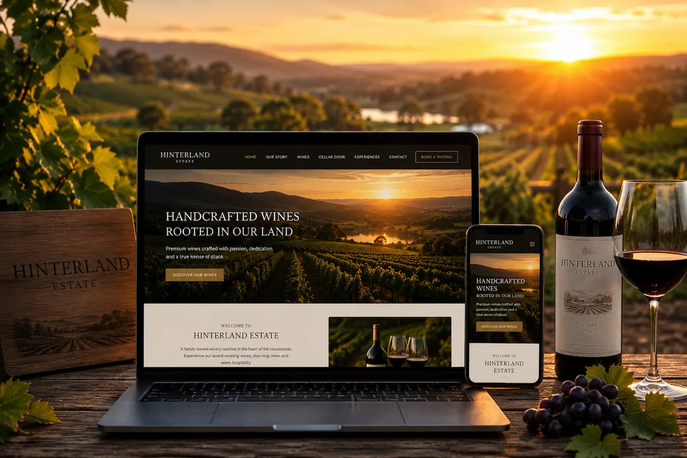
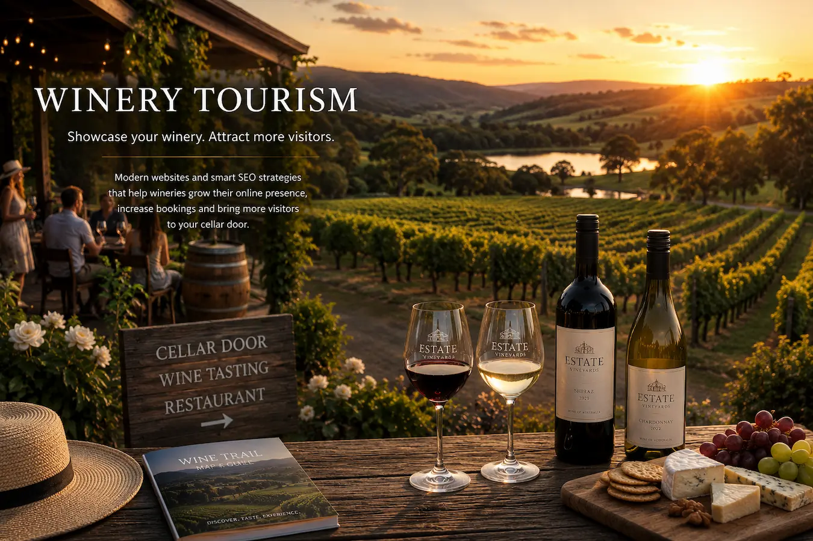
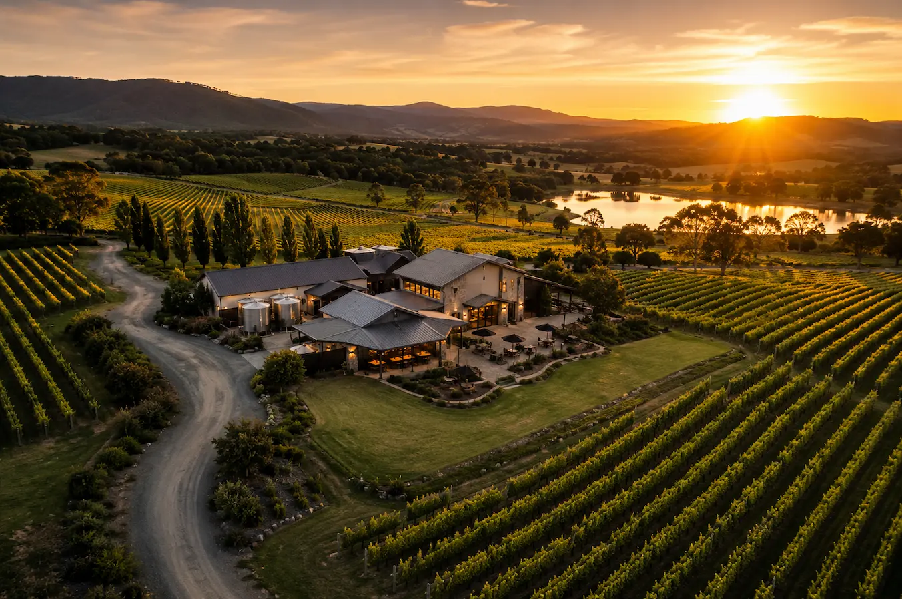

WINERY WEBSITE DESIGN NSW
Crane Platform Labs builds fast, mobile-friendly winery websites for vineyards, cellar doors and wine tourism businesses across regional NSW.
Designed to improve Google visibility, local SEO and tourism discovery while helping wineries generate more tasting enquiries, bookings and visitor traffic.
Supporting wineries and tourism businesses across Wagga Wagga , Griffith , Albury , Temora and regional NSW.


WHY WINERY SEO MATTERS
Most travellers discover wineries online before deciding where to visit. Whether visitors are planning a weekend away, searching Google Maps or looking for cellar doors while travelling through regional NSW, your website often creates the first impression of your winery.
A slow or outdated winery website can reduce trust, hurt Google visibility and make it difficult for visitors to find important information like tasting experiences, opening hours, event details or booking enquiries.
Modern winery websites help improve tourism discovery, local SEO performance and mobile usability while showcasing your vineyard, wines and visitor experience through clean, premium branding.
Crane Platform Labs builds fast, SEO-focused winery websites designed specifically for regional NSW tourism businesses. Unlike generic template websites, our websites are built to help wineries improve Google rankings, appear more professionally online and generate more visitor enquiries.
We focus on:
We build winery websites for tourism businesses across Wagga Wagga , Griffith , Albury , Temora , Junee and surrounding regional NSW wine and tourism regions.
We also help businesses improve online visibility through Google Business Profile optimisation , local SEO services and modern tourism website design .
WINERY WEBSITE FEATURES
Crane Platform Labs builds modern winery websites designed to improve Google visibility, tourism discovery and visitor enquiries for vineyards and cellar doors across regional NSW.
SEO-focused winery websites designed to help vineyards and cellar doors appear in Google searches related to wineries, wine tourism and regional NSW travel.
Optimised for visitors searching on phones while travelling through wine regions, tourism destinations and regional NSW towns.
Lightweight, fast-loading winery websites designed for strong performance, improved user experience and better Google rankings.
Help travellers quickly locate your vineyard, cellar door or winery through Google Maps integration and local SEO optimisation.
Modern winery website design that reflects the quality of your wines, tourism experience and regional NSW brand identity.
Encourage tasting bookings, event enquiries and tourism visits through clear layouts and enquiry-focused design.
Structured to improve visibility in regional NSW searches including winery tourism, cellar doors and local travel experiences.
Simple, user-friendly layouts that make it easy for visitors to explore wines, opening hours, tasting experiences and contact details.
Designed specifically for regional tourism businesses including wineries across Wagga Wagga , Griffith , Albury and surrounding NSW wine regions.
Looking for broader tourism website services? Explore our tourism website design services , local SEO solutions , Google Business Profile optimisation and regional website design pages for Junee , Temora , Cootamundra and regional NSW businesses.
REGIONAL NSW WINERY WEBSITES
Crane Platform Labs works with wineries, vineyards and tourism businesses across regional NSW, building modern websites designed to improve Google visibility, strengthen tourism branding and attract more visitor enquiries.
Many regional wineries rely heavily on tourism traffic, weekend travellers and local discovery searches. A professional winery website helps your business appear more credible online while making it easier for visitors to discover your cellar door, wines, events and tasting experiences.
Our winery websites are built with strong local SEO foundations including mobile-friendly design, fast page speed, internal linking and Google Maps optimisation to help wineries compete more effectively online.
We support wineries and tourism operators across:
We also help tourism businesses improve online visibility through Google Business Profile optimisation , local SEO services and tourism website design tailored for regional NSW businesses.
Crane Platform Labs focuses on clean, modern and SEO-focused websites built specifically for regional NSW businesses — without bloated templates or overly complicated systems.

WINERY WEBSITE FAQ
Common questions about winery website design, tourism SEO, Google visibility and attracting more visitors online across regional NSW.
Yes. A professional winery website helps build trust, improve tourism visibility and provide visitors with important information before they visit your cellar door or vineyard.
Yes. SEO-focused winery websites can improve Google visibility, tourism discovery and visitor enquiries by helping travellers find your winery online.
Many travellers search for wineries, cellar doors and wine experiences on Google Maps and mobile phones while travelling. Local SEO helps wineries appear in those searches.
Yes. We build mobile-friendly winery websites designed for visitors searching on phones while travelling through regional NSW wine regions.
Yes. We provide Google Business Profile optimisation to help wineries improve local visibility and appear more professionally online.
Yes. We modernise outdated winery websites with cleaner layouts, faster performance, improved mobile usability and stronger SEO structure.
A good winery website should load quickly, work well on mobile devices, showcase your winery professionally and make it easy for visitors to contact or visit your business.
Yes. Many travellers search for wineries online before visiting regional areas. Strong Google visibility can help increase tourism traffic and visitor enquiries.
Yes. We work with wineries and tourism businesses across Wagga Wagga , Griffith , Albury , Temora , Junee and surrounding regional NSW areas.
Yes. We build tourism websites with strong SEO structure, internal linking and Google-friendly layouts designed to improve visibility for regional NSW businesses.
Yes. Fast-loading websites improve user experience, mobile usability and overall Google performance while helping reduce visitor drop-off.
Crane Platform Labs focuses on clean, modern and SEO-focused websites for regional NSW businesses. We build fast, mobile-friendly websites designed to help tourism businesses improve online visibility and attract more enquiries.
GET STARTED
Crane Platform Labs builds fast, mobile-friendly winery websites designed to improve Google visibility, tourism discovery and visitor enquiries across regional NSW wine regions.
Whether you operate a vineyard, cellar door or tourism-focused winery, we create modern websites built to showcase your business professionally online and help travellers find you more easily through Google Search and Google Maps.
Explore more services including Local SEO , Google Business Profile Optimisation and tourism website design across Wagga Wagga , Griffith , Albury and regional NSW.